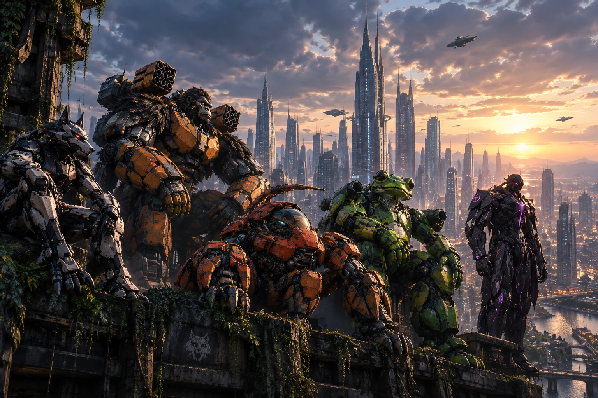
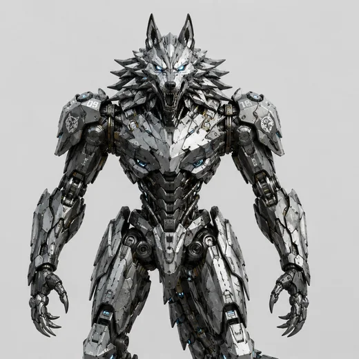
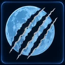
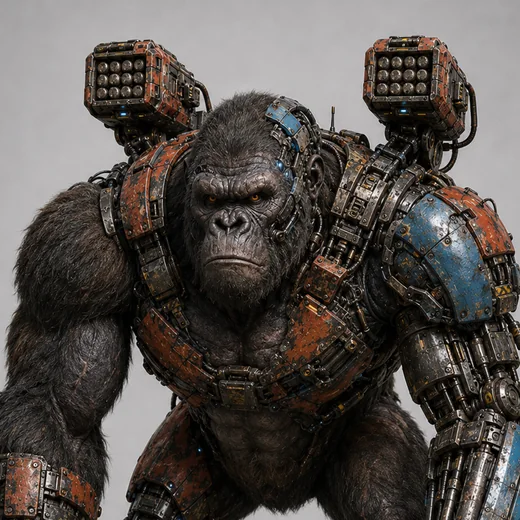
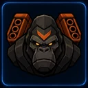
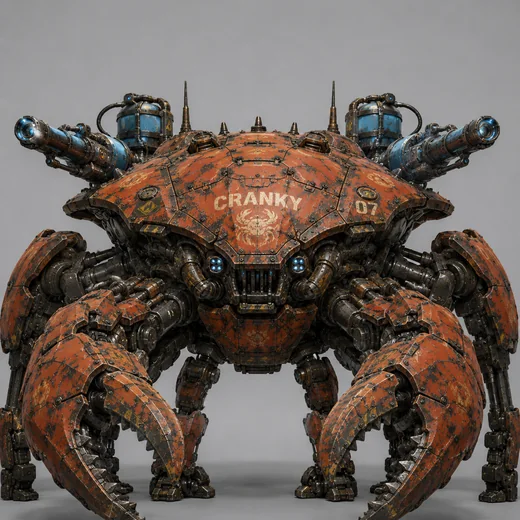
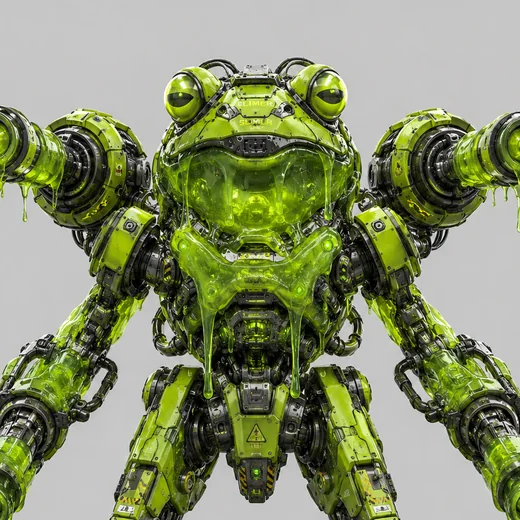
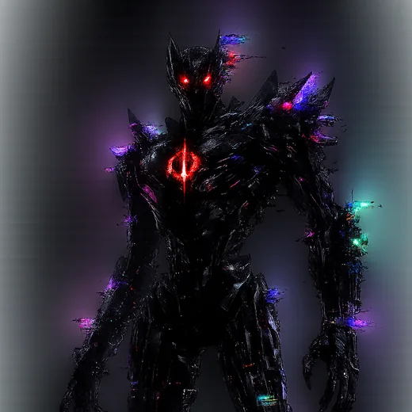
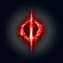

Drum & bass · from the arena floor
Mech Mayhem
Five war machines who found they liked the sound of the fight as much as the fight itself.
Built to fight. Tuned to terrain.
Every battleground in the circuit has a different sound. Somewhere around the Jungle Temple residency, five of the fighters noticed that the breaks playing over the ruins were the same tempo as a Fenrir gallop, and that a Konga pound lands exactly on the drop.
They started jamming in the loading bay with what they had: Fenrir on the drums, Konga's rocket pods on bass, Cranky's hydro hose as a wet, liquid sample bank, Frogger's sonic croak as the MC, and Nullbot doing whatever Nullbot does to a signal chain.
The band plays the music behind the battles. Every city has its own style: heavy and jagged for the foundry, glassy and liquid for the quarry, weightless halftime for orbit.
- MembersFive, all combat-rated
- Tempo174 bpm, mostly
- FormedJungle Temple loading bay
- CatalogueTitan Clash · Twelve Cities
- LiveEvery round, every arena
The machines
-


Fenrir
Drums · breaks · The Last Wild Thing
Four limbs on the kit. Plays the amen like it owes him something. Sets the tempo and keeps the pack alive.
-


Konga
Bass · sub · The Silverback Siege
When Konga drops, the arena floor moves and the lighting rig follows. Keeps the low end honest.
-

Cranky
Samples · dub · liquid · The Abyssal Bulwark
Runs the hydro hose through a delay and calls it a sample bank. Responsible for every water sound, every dub chord and the Harbor Docks material. Does not hurry.
-

Frogger
MC · vocals · The Gunk Gladiator
The sonic croak is a weapon in the arena and a hook on the record.
-


Nullbot
Production · glitch · neurofunk · The Fatal Exception
A living system error. Everything jagged, granular or wrong on purpose is Nullbot. The mix engineer's notes say only: "do not let it near the master bus". It is near the master bus.
Music
Everything is in the game. Jungle Temple, where the band started, is up on streaming; the rest are coming.
Titan Clash
The title music and the long-form loops.
Twelve Arenas
A best-of-three is fought across three different battlegrounds.
Now playing —
The arena could not be reached right now. Try again in a moment.
The residency
Twelve battlegrounds, three a night
The band plays everywhere the battle goes: a best-of-three across three different terrains.
Play Mech Mayhem- Neon District
- Ironworks Foundry
- Uptown Plaza
- Harbor Docks
- Sky Terrace
- Scrapyard 7
- Crystal Quarry
- Volcanic Forge
- Frozen Outpost
- Desert Ruins
- Jungle Temple
- Orbital Platform